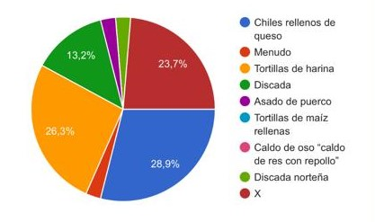
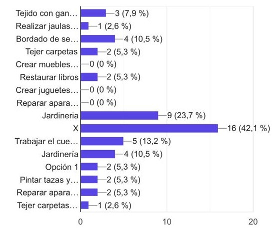

Propósito del blog
Este espacio nace para dar a conocer los saberes, las tradiciones, los platillos, conocimientos e historias de las personas de Ciudad Juárez.
Nuestro objetivo es ofrecer el reconocimiento que se merecen, además de visibilizar y concientizar sobre cuáles de estas expresiones culturales están en peligro de desaparecer.
Leyendas e historias de Ciudad Juárez
En este apartado presentaremos algunas de las historias o leyendas cortas que circulan en Ciudad Juárez, para luego ver qué tan preservadas están.
-
Don José (68 años):
“La de los túneles del centro, dicen que debajo de la catedral hay túneles que usaban los chinos y los curas en la Revolución para esconderse; conectan hasta El Paso.” -
Doña Martha (54 años):
“La de Juan Soldado, era un soldado que ayudaba a la gente pobre. Lo fusilaron injustamente en el panteón Tepeyac. Ahora la gente le reza y le lleva flores.” -
Estefanía (39 años):
“La dama de blanco del panteón de Chaveña, que se le aparece a los taxistas en la madrugada pidiendo que la lleven, pero desaparece cuando llegan al panteón.” -
Kevin (22 años):
“La de la Planchada. Es una enfermera fantasma del Hospital General; dicen que en la noche se aparece a los pacientes, les da su medicina y los cuida.” -
Doña Lupita (71 años):
“La del niño del Valle de Juárez. Dicen que en la carretera se aparece un niño pidiendo raid; si te paras y volteas ya no está. Lo atropellaron ahí hace muchos años y su alma no descansa.”
Recetas Tradicionales Compartidas
A continuación presentamos algunas recetas compartidas por las personas de la ciudad, las cuales forman parte de la identidad gastronómica de la región:
Estefanía — Chiles rellenos con caldillo de jitomate
Ingredientes:
- 6 chiles poblanos
- Queso panela
- 4 huevos
- Sal
- Harina
- 5 jitomates
- ¼ de cebolla
- 1 ajo
- Caldo de pollo
- Cilantro
Preparación:
Asas los 6 chiles poblanos, los pelas y les quitas las semillas, para luego rellenarlos de queso panela al gusto. Luego bates 4 claras a punto de turrón, agregas las yemas y una pizca de sal, y remueves un poco. Pasa los chiles por harina, luego por el huevo y los fríes. Para el caldillo, mueles los jitomates, la cebolla y el ajo para freírlos; luego le echas caldo de pollo y una ramita de cilantro. Ahí hierves los chiles por 5 minutos y listo.
Don José — Menudo
Ingredientes:
- 2 kg de panza y pata de cerdo
- Ajo
- Cebolla
- Sal
- 8 chiles guajillos
- Orégano
- Limón
Preparación:
Lavas bien la panza y la pata de cerdo, luego la pones a cocer con ajo, sal y cebolla por 4 horas mientras le quitas la espuma que le va saliendo. Aparte, tuestas 8 chiles guajillos, los remojas y luego los mueles con ajo y orégano. Cuelas el chile y se lo echas al caldo para dejarlo hervir otra hora y, por último, servirlo con cebolla picada, orégano y limón.
Doña Martha — Tortillas de harina
Ingredientes:
- 1 kg de harina
- 200 g de manteca
- 1 cdta de sal
- Agua (tibia)
Preparación:
Amasas los ingredientes hasta que no se peguen en las manos ni en la mesa, agregando el agua tibia necesaria. Luego haces bolitas, las dejas reposar 20 minutos y después las extiendes con el rodillo. Las cueces en el comal caliente y ya quedaron.
Don Pepe — Asado de puerco con chile colorado
No compartió su receta debido a que es una receta familiar.
Doña Martha — Gorditas de maíz
No la compartió ya que es una receta secreta de su autoría.
Lupita — Caldo de Oso (Caldo de res con repollo)
Ingredientes:
- Chambarete
- Hueso de cebolla y ajo
- Repollo
- Calabaza
- Zanahoria
- Elote
- Garbanzo y cilantro
Preparación:
Cocer el chambarete, el hueso, el ajo y la cebolla durante 3 horas. Luego le echas repollo, zanahoria, calabaza y elote. Al final, agregas un poco de garbanzo y cilantro. Se sirve con chile piquín y limón.
Ernesto — Discada
Ingredientes:
- Tocino
- Chorizo
- Puerco
- Res
- Salchicha
- Cebolla
- Tomate y chile jalapeño
- Cerveza
- Catsup
Preparación:
Primero echas en el disco el tocino, chorizo, puerco, res y salchicha hasta que quede dorado. Luego le echas la cebolla, el tomate y el chile picados en cuadritos, un chorro de cerveza y un poco de catsup.
En la siguiente encuesta se muestra la respuesta a la pregunta de cual es la receta más habial que suelen/saben preparar de las anteriores teniendo un alto porcentaje lo que son las tortillas siendo que parece ser algo muy habitual a diferencia de lo que es por ejemplo el "caldo de oso" que tiene un porcentaje basicamente nulo ,

Remedios Caseros y Herbolaria
En este apartado se mostrarán algunos de los remedios "caseros" o de herbolaria que se nos dieron a conocer por las personas de Juárez:
Té de manzanilla con miel y limón
- Utilidad:
- Sirve para calmar el dolor de estómago, los nervios y para poder dormir.
- Forma de aplicar:
- Se toma el té.
Vaporub con alcohol en el pecho
- Utilidad:
- Para la tos y el pecho cerrado.
- Forma de aplicar:
- Se unta en el pecho y se pone un periódico.
Té de hojas de naranja
- Utilidad:
- Para calmar los nervios y para dormir.
- Forma de aplicar:
- Se toma el té.
Té de ruda con chocolate
- Utilidad:
- Para calmarse después de un susto y para dolor de panza.
- Forma de aplicar:
- Se toma el té.
Té de gordolobo con miel y limón
- Utilidad:
- Para calmar la tos y el dolor de garganta.
- Forma de aplicar:
- Se toma el té.
Alcohol con marihuana
- Utilidad:
- Para calmar el dolor de rodillas y espalda.
- Forma de aplicar:
- Se mezcla y se huele el vapor.
Agua de alfalfa con piña y limón
- Utilidad:
- Ayuda a limpiar los riñones y a bajar de peso.
- Forma de aplicar:
- Se bebe.
Té de hojas de naranja con canela
- Utilidad:
- Para los nervios y poder dormir bien.
- Forma de aplicar:
- Se toma el té.
Té de canela con limón
- Utilidad:
- Para calmar el dolor de estómago y para el resfriado.
- Forma de aplicar:
- Se toma el té.
Ajo con miel
- Utilidad:
- Para la gripe y para limpiar la garganta.
- Forma de aplicar:
- Se toma o se come la miel.
Vapor de hojas de Eucalipto
- Utilidad:
- Ayuda cuando se está congestionado o con gripe.
- Forma de aplicar:
- Se pone a hervir agua y se le agregan hojas de eucalipto para respirar los vapores que salen.
Leche caliente con miel
- Utilidad:
- Ayuda a calmar la tos y poder descansar mejor.
- Forma de aplicar:
- Se bebe.
